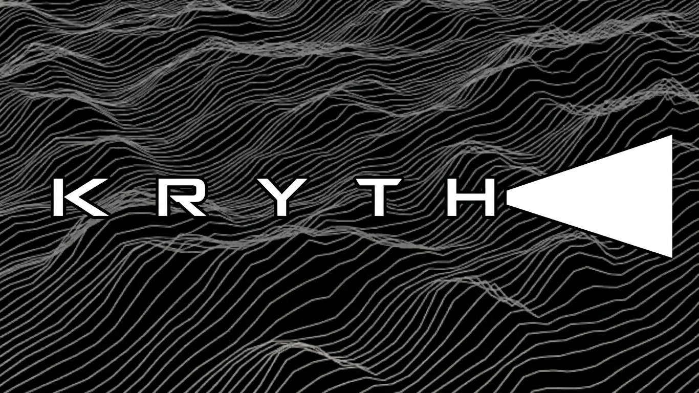
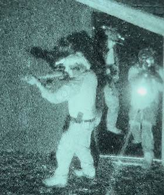
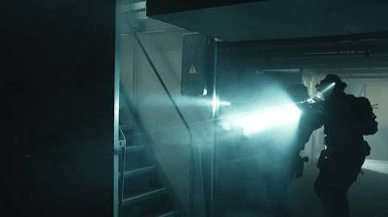
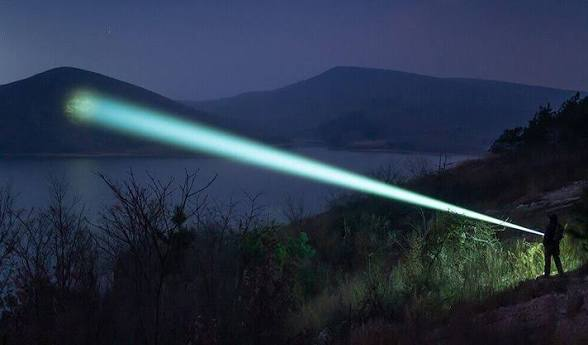
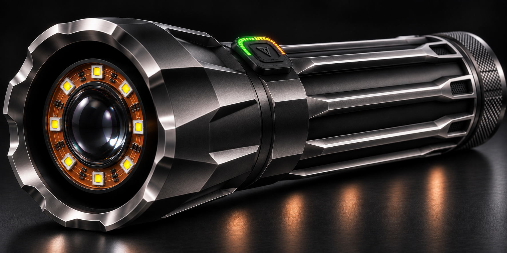
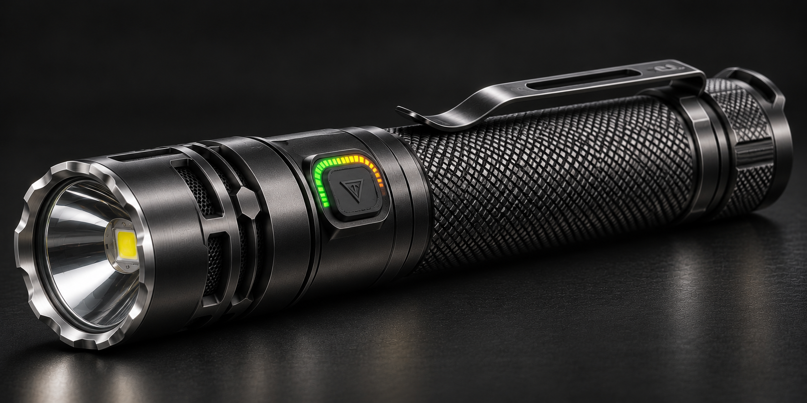

Equipment, not decoration
Intentional geometry, tactile details, and an uncompromising visual identity.
KRYTH builds its identity around purposeful illumination, angular industrial design, and a performance-first mindset. We create lights that feel like equipment: considered, substantial, and unmistakably designed.


From everyday carry to larger lighting concepts, KRYTH pairs striking form with practical features, thoughtful controls, and a clear design language. The brand is shaped by dark finishes, precise edges, durable materials, and technology that serves a real function.
Intentional geometry, tactile details, and an uncompromising visual identity.
Brightness, beam distance, runtime, and durability belong together—and should be published transparently.
Our strobe concept is one part of the KRYTH technology identity. Explore what strobe lighting is, why it exists, and how we think about integrating distinct lighting modes into a product.
Compact form. Everyday-ready design.
$149 estimated
Full-size lighting concept. Built around presence and performance.
$299 estimated

A compact light concept with streamlined proportions, sculpted geometry, and a tactile profile intended for everyday carry. Blade brings the KRYTH design language into a smaller footprint.

Performance figures and final materials will be established during prototyping and testing.

A larger flashlight concept with a sculpted head, angular body lines, and substantial grip geometry. Wraith is the full-size expression of KRYTH's industrial design direction.
*Design targets only; not yet independently tested or verified.
Wraith is envisioned to pair substantial overall output with a beam designed to reach beyond the immediate foreground. The beam image below is a concept reference, not a verified distance measurement.

Lighting is more than output. It includes consistency, thermal behavior, electrical reliability, and a thoughtful user experience.
A strobe is a flashing-light mode that repeatedly switches illumination on and off, rather than producing a continuous beam. It creates a visually distinct signal that can be noticed differently from steady light.
KRYTH's APEX-DISRUPT name represents our exploration of a distinctive strobe experience as part of the product's lighting modes and interface. Our design focus is the overall experience—clear mode selection, consistent behavior, and integration with the flashlight's broader lighting system.
Strobe is a specialized lighting effect, not a substitute for steady illumination. The feature and its user interface remain part of the concept under development.
KRYTH is an independent flashlight concept brand exploring a deliberate approach to everyday carry and performance lighting.
We believe good equipment should feel coherent: design, controls, materials, and performance should work together instead of competing for attention. KRYTH is being developed around that principle.
Products shown are concepts. Confirmed specifications, production status, and availability will be clearly identified as they are established.
